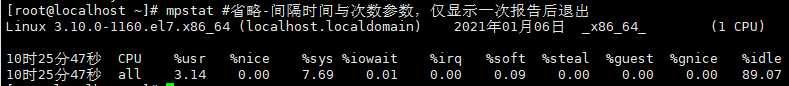
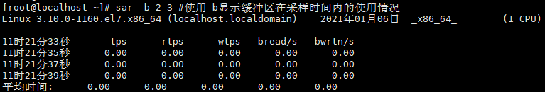
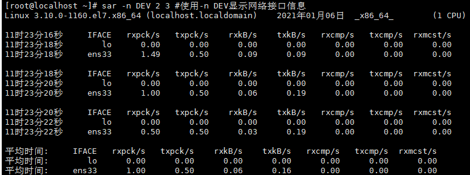
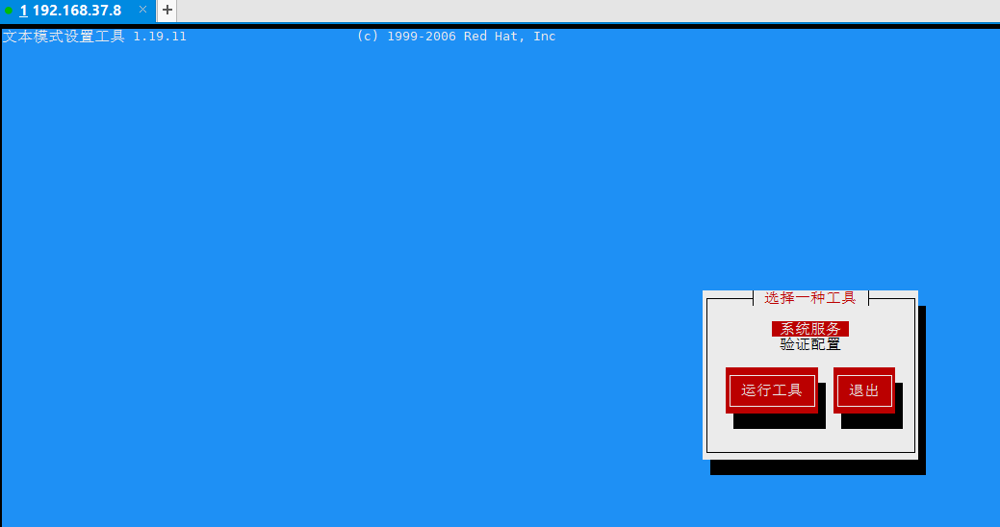

Linux 系统管理命令
文档目录：
一、lsof：查看进程打开的文件
二、uptime：显示系统的运行时间及负载
三、free：查看系统内存信息
四、iftop：动态显示网络接口流量信息
五、vmstat：虚拟内存统计
六、mpstat：CPU信息统计
七、iostat：I/O信息统计
八、iotop：动态显示磁盘I/O统计信息
九、sar：收集系统信息
十、ntsysv：管理开机服务
十一、setup：系统管理工具
十二、ethtool：查看网卡参数
十三、mii-tool：管理网络接口的状态
十四、dmidecode：查询系统硬件信息
十五、ispci：显示所有PCI设备
十六、ipcs：显示进程间同信息设施的状态
十七、ipcrm：清除ipc相关信息
十八、rpm：RPM包管理器
十九、yum：自动化RPM包管理工具
一、lsof：查看进程打开的文件
命令详解：
lsof=list open files，列举系统中已经被打开的文件，根据文件可以找到对应的进程，也可以根据进程找到打开的文件
1、显示使用文件的进程
lsof /var/log/messages #显示使用文件的进程
COMMAND：命令，即进程名
PID：进程号
USER：进程的所有者
FD：文件描述符，0-标准输出，1-标准输入，2-标准错误，u-文件被打开并处于读取/写入模式，r-表示该文件被打开并处于只读模式，w-表示该文件被打开并处于写入模式
TYPE：文件类型，REG(regular)为普通文件
DEVICE：磁盘的名称
SIZE/OFF：文件的大小
NODE：索引节点
NAME：文件名称
2、指定进程所打开的文件
lsof -c rsyslogd #指定进程所打开的文件
’ fill=’%23FFFFFF’%3E%3Crect x=’249’ y=’126’ width=’1’ height=’1’%3E%3C/rect%3E%3C/g%3E%3C/g%3E%3C/svg%3E)
3、指定进程号所打开的文件
lsof -p 57238 #指定进程号所打开的文件
’ fill=’%23FFFFFF’%3E%3Crect x=’249’ y=’126’ width=’1’ height=’1’%3E%3C/rect%3E%3C/g%3E%3C/g%3E%3C/svg%3E)
4、监听指定的协议、端口和主机等信息，显示符合条件的进程信息。
lsof -i #查看所有进程
’ fill=’%23FFFFFF’%3E%3Crect x=’249’ y=’126’ width=’1’ height=’1’%3E%3C/rect%3E%3C/g%3E%3C/g%3E%3C/svg%3E)
lsof -i tcp #显示所有tcp网络连接的进程信息
’ fill=’%23FFFFFF’%3E%3Crect x=’249’ y=’126’ width=’1’ height=’1’%3E%3C/rect%3E%3C/g%3E%3C/g%3E%3C/svg%3E)
lsof -i :22 #显示端口为22的进程，常用
’ fill=’%23FFFFFF’%3E%3Crect x=’249’ y=’126’ width=’1’ height=’1’%3E%3C/rect%3E%3C/g%3E%3C/g%3E%3C/svg%3E)
lsof -i tcp:22 #显示同事满足TCP和端口22的进程
’ fill=’%23FFFFFF’%3E%3Crect x=’249’ y=’126’ width=’1’ height=’1’%3E%3C/rect%3E%3C/g%3E%3C/g%3E%3C/svg%3E)
5、显示指定用户使用的文件
lsof -u root #使用-u指定用户使用的文件
’ fill=’%23FFFFFF’%3E%3Crect x=’249’ y=’126’ width=’1’ height=’1’%3E%3C/rect%3E%3C/g%3E%3C/g%3E%3C/svg%3E)
6、显示所有socket文件
lsof -U #使用-U显示所有socket文件
’ fill=’%23FFFFFF’%3E%3Crect x=’249’ y=’126’ width=’1’ height=’1’%3E%3C/rect%3E%3C/g%3E%3C/g%3E%3C/svg%3E)
二、uptime：显示系统的运行时间及负载
命令详解：
输出当前的系统时间、系统开机到现在的运行时间、目前有多少用户在线和系统平均负载等信息
1、uptime #显示系统运行时间及负载信息
’ fill=’%23FFFFFF’%3E%3Crect x=’249’ y=’126’ width=’1’ height=’1’%3E%3C/rect%3E%3C/g%3E%3C/g%3E%3C/svg%3E)
三、free：查看系统内存信息
命令详解：
free命令用于显示系统内存状态，具体包括系统物理内存、虚拟内存、共享内存和系统缓存等
total-代表内存总大小
used-表示使用的实际内存大小
free-剩余物理内存大小（未分配、纯剩余）
share：共享内存大小、无需关注
buff/cache：缓冲（缓冲如：cpu到io硬盘，硬盘写入速度慢 需要先将一部分数据缓存到内存）和缓存（如：io硬盘到cpu，从硬盘读取 需要先把数据临时放内存里面 大小
available：实际可使用的内存大小；（free+buff/cache只分配，但未使用的内存）
1、查看系统内存
free #默认显示字节数
’ fill=’%23FFFFFF’%3E%3Crect x=’249’ y=’126’ width=’1’ height=’1’%3E%3C/rect%3E%3C/g%3E%3C/g%3E%3C/svg%3E)
free -m #以MB为单位显示内存使用情况
’ fill=’%23FFFFFF’%3E%3Crect x=’249’ y=’126’ width=’1’ height=’1’%3E%3C/rect%3E%3C/g%3E%3C/g%3E%3C/svg%3E)
free -h #根据实际大小自动转换成KB、GB、MB单位显示
’ fill=’%23FFFFFF’%3E%3Crect x=’249’ y=’126’ width=’1’ height=’1’%3E%3C/rect%3E%3C/g%3E%3C/g%3E%3C/svg%3E)
真实剩余内存=free+buff/cache=489M+317M=806M
换算关系：
total=used + free + buff/cache
available=free + buff/cache（分配但未使用的内存）
其中：used已使用内存，和buff/cache被占用的内存没有关系；
2、定时查询内存：
free -h -s 10 #使用-s选项定时刷新内存的使用情况，单位为秒
四、iftop：动态显示网络接口流量信息
命令详解：
iftop是一款实时流量监控工具，可用于监控TCP/IP连接等，必须用root用户身份运行。
安装方法参考：https://www.cnblogs.com/chaichuan/p/4442610.html
1、不接受任务参数启动iftop命令监控流量
iftop #默认监听第一块网卡，-i可以指定网卡
界面上显示的类似刻度尺的刻度范围，是以标尺的形式显示流程图形的长条
中间的<=或>=两个箭头，表示的是流量的方向
TX：发送流量
RX：接收流量
TOTAL：总流量
Cum：运行iftop到目前时间的总流量
peak：流量峰值
rates：分别表示过去2s、10s、40s的平均流量
2、常用命令组合
iftop -nNBP #-n不进行DNS解析，-N数字形式端口号，-P显示端口号，-B，以字节流为单位，默认为bit显示流量
五、vmstat：虚拟内存统计
命令详解：
vmstat=virtual memory statistics，使用vmstat可以对操作系统的内存信息、进程状态和CPU活动等进行监视，但只能对系统的整体情况进行统计，无法对某个进程深入分析。
1、显示虚拟内存的使用情况
vmstat #省略-间隔时间与次数参数，仅显示一次报告后退出
’ fill=’%23FFFFFF’%3E%3Crect x=’249’ y=’126’ width=’1’ height=’1’%3E%3C/rect%3E%3C/g%3E%3C/g%3E%3C/svg%3E)
vmstat 5 #表示每5秒更新一次输出信息，循环输出，ctrl+c退出
’ fill=’%23FFFFFF’%3E%3Crect x=’249’ y=’126’ width=’1’ height=’1’%3E%3C/rect%3E%3C/g%3E%3C/g%3E%3C/svg%3E)
vmstat 5 6 #表示每5秒更新一次输出信息，统计6次后停止输出
’ fill=’%23FFFFFF’%3E%3Crect x=’249’ y=’126’ width=’1’ height=’1’%3E%3C/rect%3E%3C/g%3E%3C/g%3E%3C/svg%3E)
第1列：procs
r-运行和等待CPU时间片的进程数，b-正在等待资源的进程数
第2列：memory
swpd：表示使用虚拟内存的大小
free：表示当前空闲的物理内存数量
buff：表示buffers的内存数量
cache：表示cache的内存数量
第3列：swap
si(swap in)：列表示由磁盘调入内存，也就是内存进入内存交换区的数量
so(swap out)：列表示由内存调入磁盘，也就是内存交换区进入内存的数量
第4列：I/O项显示磁盘读写状况
bi列表示从块设备读入数据的总量(即读磁盘)（块/s）
bo列表示写入块设备数据的总量(即读磁盘)（块/s）
第5列：system显示采集间隔内发生的中断数
in列表示在某一时间间隔中观测到的每秒设备中断数
cs列表示每秒产生的上下文切换次数
第6列：CPU项显示了CPU的使用状态
us列显示了用户进程消耗的CPU时间百分比
sy列显示了系统（内核）进程消耗的cpu时间百分比
id列显示了CPU处在空闲状态的时间百分比
wa列显示了I/O等待所占用的CPU时间百分比
st列显示了虚拟机占用的CPU时间的百分比
2、显示活跃和非活跃内存
vmstat -a 2 5 #-a内容增加了inact与active选项，分别代表非活跃与活跃内存
’ fill=’%23FFFFFF’%3E%3Crect x=’249’ y=’126’ width=’1’ height=’1’%3E%3C/rect%3E%3C/g%3E%3C/g%3E%3C/svg%3E)
3、查看内存使用的详细情况
vmstat -s
’ fill=’%23FFFFFF’%3E%3Crect x=’249’ y=’126’ width=’1’ height=’1’%3E%3C/rect%3E%3C/g%3E%3C/g%3E%3C/svg%3E)
4、查看磁盘的读/写
vmstat -d
’ fill=’%23FFFFFF’%3E%3Crect x=’249’ y=’126’ width=’1’ height=’1’%3E%3C/rect%3E%3C/g%3E%3C/g%3E%3C/svg%3E)
5、查看dev/sda1磁盘的读写
vmstat -p /dev/sda1
’ fill=’%23FFFFFF’%3E%3Crect x=’249’ y=’126’ width=’1’ height=’1’%3E%3C/rect%3E%3C/g%3E%3C/g%3E%3C/svg%3E)
reads：来自该分区的读的次数
reads sectors：来自于该分区的读扇区的次数
writes：来自于该分区的写的次数
requested writes：来自于该分区的写请求的次数
六、mpstat：CPU信息统计
命令详解：
mpstat=multiprocessor statistics，一种实时监控工具，输出cpu的统计信息，存放在/proc/stat，可查询所有cpu平均信息， 也可以查特定的cpu信息
mpstat的最大特点：可以查看多核cpu中每个计算核心的统计数据，而vmstat只能查看系统整体的cpu情况
1、显示cpu统计信息
mpstat #省略-间隔时间与次数参数，仅显示一次报告后退出

mpstat 5 6 #表示每5秒更新一次输出信息，统计6次后停止输出

第一列：当前时间
CPU：all表示所有cpu，0表示第一个cpu
%user：用户进程消耗的CPU时间（%）
%nice：nice值为负进程的CPU时间（%）
%sys 核心时间（%）
%iowait 硬盘IO等待时间（%）
%irq 硬中断时间（%）
%soft 软中断时间（%）
%steal 显示虚拟机管理器在服务另一个虚拟处理器时虚拟CPU处在非自愿等待下花费时间的百分比
%guest 显示运行虚拟处理器时CPU花费时间的百分比
%idle CPU除去等待磁盘IO操作外的因为任何原因而空闲的时间闲置时间（%）
2、显示指定cpu信息的统计
mpstat -P 0 #显示第一个cpu的信息
七、iostat：I/O信息统计
命令详解：
iostat=I/O statistics,主要功能是对系统磁盘I/O操作进行监控，它的输出主要是显示磁盘读写操作的统计信息，同时也会给出CPU的使用情况，同vmstat命令一样，不能对某个进程进行深入分析，仅对整体情况进行分析
1、iostat #省略-间隔时间与次数参数，仅显示一次报告后退出
%user：CPU处在用户模式下的时间百分比
%nice：CPU处在带NICE值的用户模式下的时间百分比
%system：CPU处在系统模式下的时间百分比
%iowait：CPU等待输入输出完成时间的百分比
%steal：管理程序维护另一个虚拟处理器时，虚拟CPU的无意识等待时间百分比
%idle：CPU空闲时间百分比
device:磁盘名称
tps:每秒钟发送到的I/O请求数
Blk_read/s:每秒读取的block数
Blk_wrtn/s:每秒写入的block数
Blk_read:读入的block总数
Blk_wrtn:写入的block总数
2、定时显示所有信息
iostat 2 3 #每2秒更新一次信息，共显示3次
’ fill=’%23FFFFFF’%3E%3Crect x=’249’ y=’126’ width=’1’ height=’1’%3E%3C/rect%3E%3C/g%3E%3C/g%3E%3C/svg%3E)
3、只显示磁盘统计信息
iostat -d
’ fill=’%23FFFFFF’%3E%3Crect x=’249’ y=’126’ width=’1’ height=’1’%3E%3C/rect%3E%3C/g%3E%3C/g%3E%3C/svg%3E)
iostat -d -k #-k以KB为单位显示数据
’ fill=’%23FFFFFF’%3E%3Crect x=’249’ y=’126’ width=’1’ height=’1’%3E%3C/rect%3E%3C/g%3E%3C/g%3E%3C/svg%3E)
4、查看扩展信息
iostat -d -x -k #-x显示扩展信息
’ fill=’%23FFFFFF’%3E%3Crect x=’249’ y=’126’ width=’1’ height=’1’%3E%3C/rect%3E%3C/g%3E%3C/g%3E%3C/svg%3E)
rrqm/s: 每秒进行 merge 的读操作数目。即 rmerge/s
wrqm/s: 每秒进行 merge 的写操作数目。即 wmerge/s
r/s: 每秒完成的读 I/O 设备次数。即 rio/s
w/s: 每秒完成的写 I/O 设备次数。即 wio/s
rkB/s: 每秒读K字节数。是 rsect/s 的一半，因为每扇区大小为512字节。
wkB/s: 每秒写K字节数。是 wsect/s 的一半。
avgrq-sz: 平均每次设备I/O操作的数据大小 (扇区)。
avgqu-sz: 平均I/O队列长度。
rsec/s: 每秒读扇区数。即 rsect/s
wsec/s: 每秒写扇区数。即 wsect/s
r_await:每个读操作平均所需的时间
不仅包括硬盘设备读操作的时间，还包括了在kernel队列中等待的时间。
w_await:每个写操作平均所需的时间
不仅包括硬盘设备写操作的时间，还包括了在kernel队列中等待的时间。
await: 平均每次设备I/O操作的等待时间 (毫秒)。
svctm: 平均每次设备I/O操作的服务时间 (毫秒)。
%util: 一秒中有百分之多少的时间用于 I/O 操作，即被io消耗的cpu百分比
备注：如果 %util 接近 100%，说明产生的I/O请求太多，I/O系统已经满负荷，该磁盘可能存在瓶颈。如果 svctm 比较接近 await，说明 I/O 几乎没有等待时间；如果 await 远大于 svctm，说明I/O 队列太长，io响应太慢，则需要进行必要优化。如果avgqu-sz比较大，也表示有当量io在等待。
5、只查看cpu的信息
’ fill=’%23FFFFFF’%3E%3Crect x=’249’ y=’126’ width=’1’ height=’1’%3E%3C/rect%3E%3C/g%3E%3C/g%3E%3C/svg%3E)
八、iotop：动态显示磁盘I/O统计信息
命令详解：
iptop命令是一款实时监控磁盘I/O的工具，必须以root身份运行，使用iotop命令可以很方便地查看每个进程使用磁盘I/O的情况
1、不接任何参数启动iotop命令
’ fill=’%23FFFFFF’%3E%3Crect x=’249’ y=’126’ width=’1’ height=’1’%3E%3C/rect%3E%3C/g%3E%3C/g%3E%3C/svg%3E)
Total DISK READ：总磁盘读取速度
Total DISK WRITE：总磁盘读取速度
TID：进程pid值 PRIO：优先级
USER：用户
DISK READ：磁盘读取速度
DISK WRITE：磁盘写入速度
SWAPIN：从swap分区读取数据占用的百分比
I/O：I/O占用的百分比
COMMAND：消耗I/O的进程名
九、sar：收集系统信息
命令详解：
通过sar命令，可以全面地获取系统的CPU、运行队列、磁盘I/O、分页（交换区）、内存、CPU中断和网络等硬盘信息
1、sar -u 2 3 #-u显示系统所有cpu的负载状态，2，3代表每2秒统计一次，共统计3次
%user：CPU处在用户模式下的时间百分比
%nice：CPU处在带NICE值的用户模式下的时间百分比
%system：CPU处在系统模式下的时间百分比
%iowait：CPU等待输入输出完成时间的百分比
%steal：管理程序维护另一个虚拟处理器时，虚拟CPU的无意识等待时间百分比
%idle：CPU空闲时间百分比
2、显示运行队列的大小
sar -q 2 3 #使用-q选项显示运行队列的大小
runq-sz 运行队列的长度（等待运行的进程数，每核的CP不能超过3个）
plist-sz 进程列表中的进程（processes）和线程数（threads）的数量
ldavg-1 最后1分钟的CPU平均负载，即将多核CPU过去一分钟的负载相加再除以核心数得出的平均值，5分钟和15分钟以此类推
ldavg-5 最后5分钟的CPU平均负载
ldavg-15 最后15分钟的CPU平均负载
3、显示系统内存的使用状况
sar -r 2 3 #使用-r选项显示系统内存在采样时间内的使用情况

kbmemfree 空闲的物理内存大小
kbmemused 使用中的物理内存大小
%memused 物理内存使用率
kbbuffers 内核中作为缓冲区使用的物理内存大小，kbbuffers和kbcached:这两个值就是free命令中的buffer和cache.
kbcached 缓存的文件大小
kbcommit 保证当前系统正常运行所需要的最小内存，即为了确保内存不溢出而需要的最少内存（物理内存+Swap分区）
commit 这个值是kbcommit与内存总量（物理内存+swap分区）的一个百分比的值
4、显示缓冲区的使用情况
sar -b 2 3 #使用-b显示缓冲区在采样时间内的使用情况

tps 磁盘每秒钟的IO总数，等于iostat中的tps
rtps 每秒钟从磁盘读取的IO总数
wtps 每秒钟从写入到磁盘的IO总数
bread/s 每秒钟从磁盘读取的块总数
bwrtn/s 每秒钟此写入到磁盘的块总数
5、显示网络的运行状态
sar -n DEV 2 3 #使用-n DEV显示网络接口信息

#IFACE 本地网卡接口的名称
#rxpck/s 每秒钟接受的数据包
#txpck/s 每秒钟发送的数据库
#rxKB/S 每秒钟接受的数据包大小，单位为KB
#txKB/S 每秒钟发送的数据包大小，单位为KB
#rxcmp/s 每秒钟接受的压缩数据包
#txcmp/s 每秒钟发送的压缩包
#rxmcst/s 每秒钟接收的多播数据包
sar -n EDEV 2 3 #-n EDEV显示网络错误的统计数据
’ fill=’%23FFFFFF’%3E%3Crect x=’249’ y=’126’ width=’1’ height=’1’%3E%3C/rect%3E%3C/g%3E%3C/g%3E%3C/svg%3E)
IFACE 网卡名称
rxerr/s 每秒钟接收到的损坏的数据包
txerr/s 每秒钟发送的数据包错误数
coll/s 当发送数据包时候，每秒钟发生的冲撞（collisions）数，这个是在半双工模式下才有
rxdrop/s 当由于缓冲区满的时候，网卡设备接收端每秒钟丢掉的网络包的数目
txdrop/s 当由于缓冲区满的时候，网络设备发送端每秒钟丢掉的网络包的数目
txcarr/s 当发送数据包的时候，每秒钟载波错误发生的次数
rxfram 在接收数据包的时候，每秒钟发生的帧对其错误的次数
rxfifo 在接收数据包的时候，每秒钟缓冲区溢出的错误发生的次数
txfifo 在发生数据包 的时候，每秒钟缓冲区溢出的错误发生的次数
6、查看系统磁盘的读写性能
sar -d 2 3 #-d显示系统所有硬盘设备在采样时间内的使用情况
’ fill=’%23FFFFFF’%3E%3Crect x=’249’ y=’126’ width=’1’ height=’1’%3E%3C/rect%3E%3C/g%3E%3C/g%3E%3C/svg%3E)
DEV 磁盘设备的名称，如果不加-p，会显示dev253-0类似的设备名称，因此加上-p显示的名称更直接
tps：每秒I/O的传输总数
rd_sec/s 每秒读取的扇区的总数
wr_sec/s 每秒写入的扇区的总数
avgrq-sz 平均每次次磁盘I/O操作的数据大小（扇区）
avgqu-sz 磁盘请求队列的平均长度
await 从请求磁盘操作到系统完成处理，每次请求的平均消耗时间，包括请求队列等待时间，单位是毫秒（1秒等于1000毫秒），等于寻道时间+队列时间+服务时间
svctm I/O的服务处理时间，即不包括请求队列中的时间
%util I/O请求占用的CPU百分比，值越高，说明I/O越慢
十、ntsysv：管理开机服务
命令详解：
提供基于文本界面的菜单编辑操作方式，以设置不同运行级别下的系统启动状态
’ fill=’%23FFFFFF’%3E%3Crect x=’249’ y=’126’ width=’1’ height=’1’%3E%3C/rect%3E%3C/g%3E%3C/g%3E%3C/svg%3E)
’ fill=’%23FFFFFF’%3E%3Crect x=’249’ y=’126’ width=’1’ height=’1’%3E%3C/rect%3E%3C/g%3E%3C/g%3E%3C/svg%3E)
十一、setup：系统管理工具
命令详解：
一个基于文本界面的系统管理工具，集成了用户认证管理、防火墙管理、网络管理和系统管理。
1、安装：yum -y install setuptool
2、进行set交互界面
’ fill=’%23FFFFFF’%3E%3Crect x=’249’ y=’126’ width=’1’ height=’1’%3E%3C/rect%3E%3C/g%3E%3C/g%3E%3C/svg%3E)

十二、ethtool：查看网卡参数
1、查询网卡的基础参数
ethtool ens33
十三、mii-tool：管理网络接口的状态
1、查看网络接口状态
mii-tool ens33 #不加参数，显示精简信息
mii-tool -v ens33 #-v显示详细信息
十四、dmidecode：查询系统硬件信息
1、查看服务器型号
dmidecode -s system-product-name #查看服务器型号
2、dmidecode -s system-serial-number #查看序列号关键字
’ fill=’%23FFFFFF’%3E%3Crect x=’249’ y=’126’ width=’1’ height=’1’%3E%3C/rect%3E%3C/g%3E%3C/g%3E%3C/svg%3E)
3、dmidecode -t memory|more #查看内存信息
’ fill=’%23FFFFFF’%3E%3Crect x=’249’ y=’126’ width=’1’ height=’1’%3E%3C/rect%3E%3C/g%3E%3C/g%3E%3C/svg%3E)
十五、ispci：显示所有PCI设备
1、显示所有pci设备
lspci #显示所有pci设备
’ fill=’%23FFFFFF’%3E%3Crect x=’249’ y=’126’ width=’1’ height=’1’%3E%3C/rect%3E%3C/g%3E%3C/g%3E%3C/svg%3E)
2、显示网卡设备信息
lspci -s 02:01.0 #从以上信息得到网卡设备编号
’ fill=’%23FFFFFF’%3E%3Crect x=’249’ y=’126’ width=’1’ height=’1’%3E%3C/rect%3E%3C/g%3E%3C/g%3E%3C/svg%3E)
十六、ipcs：显示进程间同信息设施的状态
1、显示进程间的通信状态
’ fill=’%23FFFFFF’%3E%3Crect x=’249’ y=’126’ width=’1’ height=’1’%3E%3C/rect%3E%3C/g%3E%3C/g%3E%3C/svg%3E)
十七、ipcrm：清除ipc相关信息
ipcrm -s 0 #清除semid为0的信号集
’ fill=’%23FFFFFF’%3E%3Crect x=’249’ y=’126’ width=’1’ height=’1’%3E%3C/rect%3E%3C/g%3E%3C/g%3E%3C/svg%3E)
十八、rpm：RPM包管理器
命令详解：
rpm=Red Hat Package Manager(Red Hat管理器)，几乎所有的Liunx发行版本都使用了这种形式的命令管理、安装、更新和卸载软件
rpm包含五种基础命令：安装、卸载、升级、查询和验证
1、查看rpm包信息
rpm -qpi 389-ds-base-snmp-1.3.10.2-6.el7.x86_64.rpm #显示rpm包的版本，创建日期等信息
’ fill=’%23FFFFFF’%3E%3Crect x=’249’ y=’126’ width=’1’ height=’1’%3E%3C/rect%3E%3C/g%3E%3C/g%3E%3C/svg%3E)
2、 查看rpm包内容
rpm -qpl 389-ds-base-snmp-1.3.10.2-6.el7.x86_64.rpm #显示rpm包内的文件
’ fill=’%23FFFFFF’%3E%3Crect x=’249’ y=’126’ width=’1’ height=’1’%3E%3C/rect%3E%3C/g%3E%3C/g%3E%3C/svg%3E)
3、查看rpm包的依赖
rpm -qpR 389-ds-base-snmp-1.3.10.2-6.el7.x86_64.rpm #查看安装次rpm包需要依赖的文件
4、rpm -ivh 389-ds-base-snmp-1.3.10.2-6.el7.x86_64.rpm #-h查看安装时的进度
5、查看系统是否安装指定的rpm包
rpm -qa yum #接软件名

6、卸载rmq包
rpm -e lsof #卸载软件包
十九、yum：自动化RPM包管理工具
命令详解：
yum=yellow dog updater modified，是多个Liunx发行版的软件包管理，如Redhat、Centos、Fedora，yum主要用于自动安装、升级rpm软件包，它能自动查找并解决rpm包之前的依赖关系。
1、安装lsof软件包
yum -y install lsof
2、检查安装列表
yum list lsof
本博客所有文章除特别声明外，均采用 CC BY-SA 4.0 协议 ，转载请注明出处！